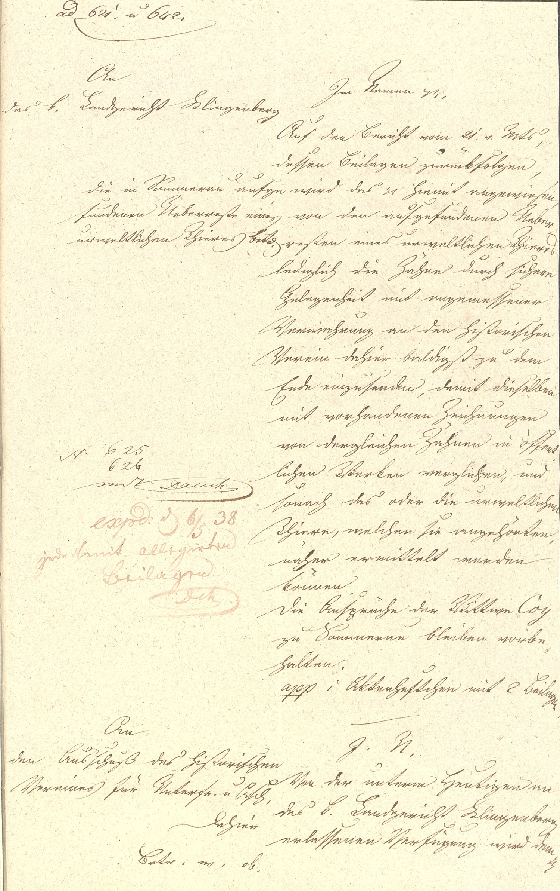

StA Würzburg, Regierung von Unterfranken, Präsidialakten, 232



Kommentar
StA Würzburg, Regierung von Unterfranken, Präsidialakten 232
Konzept für eine Entschließung der Regierung von Unterfranken, Funde prähistorischer Knochen betreffend1838 Mai 6 ()
Bei Bauarbeiten hatte man auf dem Grundstück einer Witwe in Sommerau (Markt Eschau) Tierknochen gefunden, die am 2. Mai 1838 durch Prof. Dr. August von Klipstein unter anderem einem Mammut zugeordnet wurden. Vier Tage später erging von der Regierung von Unterfranken eine Entschließung an das Landgericht Klingenberg, wo die Funde aufbewahrt wurden: Die ebenfalls ausgegrabenen Zähne sollten zur genaueren Untersuchung, insbesondere durch den Würzburger Universitätsprofessor Valentin Leiblein, an den Historischen Verein für Unterfranken geschickt werden. Bei dem hier gezeigten Stück handelt es sich um das Konzept für diese Entschließung, direkt darunter schließt sich das Konzept für eine entsprechende Entschließung an den Historischen Verein an.
Das Konzept ist in Kurrent geschrieben, bei der Häkchen bzw. Kringel an den Oberlängen von f und langem s auffallen. Sie sind häufig nicht mit dem Buchstaben verbunden und nach rechts versetzt, sodass sie mit einem diakritischen Zeichen verwechselt werden können. Über den Doppelvokalen ff und ss wird nur ein Häkchen angebracht. Umlaute werden nur als Kleinbuchstaben mit zwei übergeschriebenen Pünktchen dargestellt (z.B. Z. 21: zurückfolgen), am Beginn des großgeschriebenen Wortes Ueberreste (Z. 5) mit nachgestelltem e. st wird ligiert, nicht aber ff, ss oder tt, das k kann einem b ähneln (z. B. Z. 43: k(önigliche)), unterscheidet sich aber deutlich in der Verbindung mit dem nachfolgenden Buchstaben (vgl. Z. 32: Werken und Z. 38: bleiben).
Für Personennamen und lateinische Worte wird, auch in den Bearbeitungsvermerken, humanistische Kursive verwendet.
Konzept für eine Entschließung der Regierung von Unterfranken, Funde prähistorischer Knochen betreffend1838 Mai 6 ()
Archivaliengattung: Akt
Schwierigkeitsgrad: mittel
Schreiberhände:
- Bearbeitungsvermerke (S1)
- Schreiber des Konzepts (S2)
Bei Bauarbeiten hatte man auf dem Grundstück einer Witwe in Sommerau (Markt Eschau) Tierknochen gefunden, die am 2. Mai 1838 durch Prof. Dr. August von Klipstein unter anderem einem Mammut zugeordnet wurden. Vier Tage später erging von der Regierung von Unterfranken eine Entschließung an das Landgericht Klingenberg, wo die Funde aufbewahrt wurden: Die ebenfalls ausgegrabenen Zähne sollten zur genaueren Untersuchung, insbesondere durch den Würzburger Universitätsprofessor Valentin Leiblein, an den Historischen Verein für Unterfranken geschickt werden. Bei dem hier gezeigten Stück handelt es sich um das Konzept für diese Entschließung, direkt darunter schließt sich das Konzept für eine entsprechende Entschließung an den Historischen Verein an.
Das Konzept ist in Kurrent geschrieben, bei der Häkchen bzw. Kringel an den Oberlängen von f und langem s auffallen. Sie sind häufig nicht mit dem Buchstaben verbunden und nach rechts versetzt, sodass sie mit einem diakritischen Zeichen verwechselt werden können. Über den Doppelvokalen ff und ss wird nur ein Häkchen angebracht. Umlaute werden nur als Kleinbuchstaben mit zwei übergeschriebenen Pünktchen dargestellt (z.B. Z. 21: zurückfolgen), am Beginn des großgeschriebenen Wortes Ueberreste (Z. 5) mit nachgestelltem e. st wird ligiert, nicht aber ff, ss oder tt, das k kann einem b ähneln (z. B. Z. 43: k(önigliche)), unterscheidet sich aber deutlich in der Verbindung mit dem nachfolgenden Buchstaben (vgl. Z. 32: Werken und Z. 38: bleiben).
Für Personennamen und lateinische Worte wird, auch in den Bearbeitungsvermerken, humanistische Kursive verwendet.
Entzifferung
(Absatz Beginn)
1 [linke Seite:] (Bearbeitungsvermerke:) ad(Wechsel des Schriftsystems) 621. u(nd) 642.
2 (Schreiber des Konzepts:) An
3 das k(önigliche) Landgericht Klingenberg
4 die in Sommerau aufge
5 fundenen Ueberreste eines
6 urweltlichen Thieres betr(effend).
7 (Bearbeitungsvermerke:) N(ummer)(Wechsel des Schriftsystems) 625
8 626
9 m(un)d(ier)t Dauch(Wechsel des Schriftsystems)
10 exp(e)d(itum)(Wechsel des Schriftsystems) d(en) 6/5 38
11 jede N(ummer)(Wechsel des Schriftsystems) mitallegirten
12 Beilagen
13 D(au)ch(Wechsel des Schriftsystems)
14 (Schreiber des Konzepts:) An
15 den Ausschuß des historischen
16 Vereines für Unterfr(anken) u(nd) Asch(affenburg)
17 dahier
18 Betr(eff) w(ie) ob(en)
19 [rechte Seite:] Jm Namen (et cetera),
20 Auf den Bericht vom 21. v(origen) M(ona)ts,
21 dessen Beilagen zurückfolgen,
22 wird das (et cetera) hiemit angewiesen,
23 von den aufgefundenen Ueber-
24 resten eines urweltlichen Thieres
25 lediglich die Zähne durch sichere
26 Gelegenheit mit angemessener
27 Verwahrung an den historischen
28 Verein dahier baldigst zu dem
29 Ende einzusenden, damit dieselben
30 mit vorhandenen Zeichnungen
31 von dergleichen Zähnen in öffent-
32 lichen Werken verglichen, und
33 sonach das oder die urweltlichen
34 Thiere, welchen sie angehörten,
35 näher ermittelt werden
36 können.
37 Die Ansprüche der Wittwe Coy(Wechsel des Schriftsystems)
38 zu Sommerau bleiben vorbe-
39 halten.
40 app(ensum)(Wechsel des Schriftsystems) 1 Aktenheftchen mit 2 Beilagen.
41 J(m) N(amen etc.)
42 Von der unterm Heutigen an
43 das k(önigliche) Landgericht Klingenberg
44 erlassenen Verfügung wird dem(et cetera)
(Absatz Ende)
Transkription
(Absatz Beginn)
1 [linke Seite:] (Bearbeitungsvermerke:) ad(Wechsel des Schriftsystems) 621. und 642.
2 (Schreiber des Konzepts:) An
3 das königliche Landgericht Klingenberg
4 Die in Sommerau aufge-
5 fundenen Ueberreste eines
6 urweltlichen Thieres betreffend.
7 (Bearbeitungsvermerke:) Nummer(Wechsel des Schriftsystems) 625
8 626
9 mundiert Dauch(Wechsel des Schriftsystems)
10 expeditum(Wechsel des Schriftsystems), den 6.5.[18]38
11 jede Nummer(Wechsel des Schriftsystems) mit allegirten
12 Beilagen
13 Dauch(Wechsel des Schriftsystems)
14 (Schreiber des Konzepts:) An
15 den Ausschuß des historischen
16 Vereines für Unterfranken und Aschaffenburg
17 dahier
18 Betreff wie oben
19 [rechte Seite:] Im Namen et cetera.
20 Auf den Bericht vom 21. vorigen Monats,
21 dessen Beilagen zurückfolgen,
22 wird das et cetera hiemit angewiesen,
23 von den aufgefundenen Ueber-
24 resten eines urweltlichen Thieres
25 lediglich die Zähne durch sichere
26 Gelegenheit mit angemessener
27 Verwahrung an den historischen
28 Verein dahier baldigst zu dem
29 Ende einzusenden, damit dieselben
30 mit vorhandenen Zeichnungen
31 von dergleichen Zähnen in öffent-
32 lichen Werken verglichen und
33 sonach das oder die urweltlichen
34 Thiere, welchen sie angehörten,
35 näher ermittelt werden
36 können.
37 Die Ansprüche der Wittwe Coy(Wechsel des Schriftsystems)
38 zu Sommerau bleiben vorbe-
39 halten.
40 Appensum(Wechsel des Schriftsystems): 1 Aktenheftchen mit 2 Beilagen.
41 Im Namen et cetera.
42 Von der unterm Heutigen an
43 das königliche Landgericht Klingenberg
44 erlassenen Verfügung wird dem et cetera ...
(Absatz Ende)